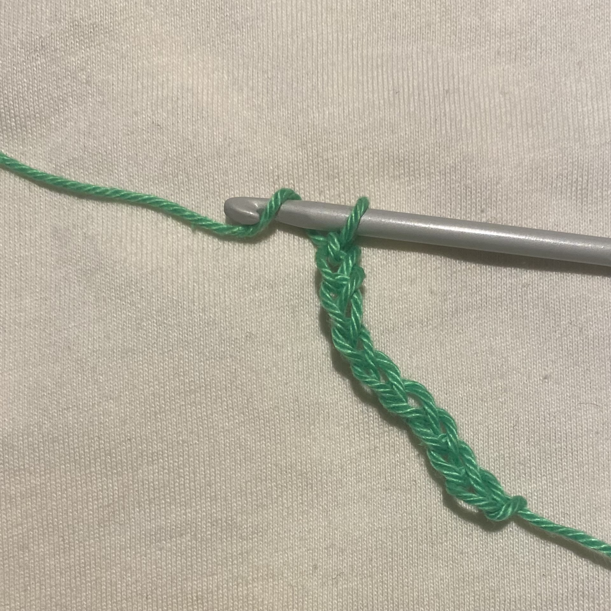

Learn double crochet
-
Yarn over
Most patterns call for a turning chain, which can be seen here beneath the hook, to begin a row. For double crochet, it usually counts as one stitch and consists of three chains, which are roughly the same height as one double crochet stitch. You can determine whether to count it based on your pattern. Take the yarn over your crochet hook with one loop on it.
Step one of making the a double crochet -
Insert Your Crochet Hook
Your crochet hook should be inserted into the chosen stitch or gap. Start with a foundation chain and place the hook in the fourth chain, skipping the first three chains that are closest to it. Put the hook in the second stitch, not the one at the bottom of the turning chain, for a sample like this. Reverse the yarn over the crochet hook while it is in the stitch. It's as if you were winding the yarn around before inserting the hook as you go. The difference is that there is now more yarn on your hook, making movement a little more challenging. You'll quickly master the motion.
Step two of making the a double crochet -
Draw through the Loop and yarn over
Pull or "draw" the last yarn over through the point where you inserted the hook, 3 loops on the hook. Then yarn over.
Step three of making the a double crochet -
Draw Yarn Through 2 Loops and yarn over
Draw the hook through the two loops closest to the end of the hook, 2 loops on the hook. Then yarn over.
Step four of making the a double crochet -
Draw Through Last 2 Loops
Draw the hook through the remaining loops on the hook, 1 loop on the hook, 1 double crochet stitch made. Here you can see the turning chain to the right of the double crochet stitch you made.
Step five of making the a double crochet